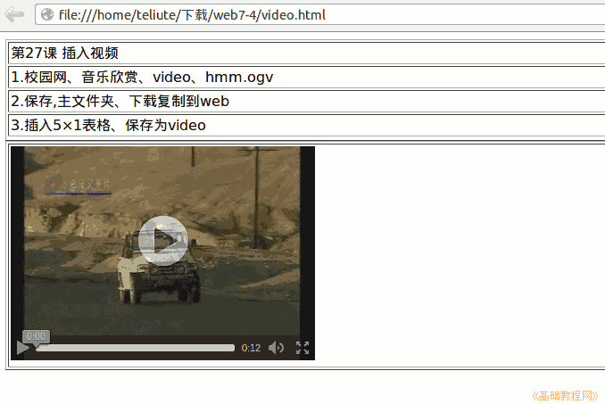

2011-2012 第二学期七年级文字处理和网页教学设计
作者：TeliuTe 来源：基础教程网
二十七、学会插入视频 返回目录 下一课
（一）教学设计
1、学习目标：学会插入视频
2、注意事项：输代码的时候注意单词拼写，让学生学会自己检查单词。
3、教学过程：
1）教师准备学案和板书；
2）学生整队进入，开机抄黑板上笔记；
3）教师讲解板书演示操作；
4）学生打指法、日志、完成操作；
5）教师打勾记录学生指法成绩，检查日志和操作；
注：学生抄完笔记就开始打指法、日志，老师讲完后再继续完成；
（二）板书设计(学生笔记)
第27课 学会插入视频
1、校园网、音乐欣赏、video、hmm.ogv
2、保存到7-4、web 中
3、插入5×1表格 ，保存为video
4、点下边的源代码，删除4<br>，输入
代码:
<video src="hmm.ogv"
controls="controls">
A video.
</video>
操作图示：

（三）课后记 2012-6-5 11:44
下午让把笔记本带来，抄一下代码
从九年级来看，容易错误在输入代码上
--
双引号的输入方法，简单提示一下上档键
容易错误的三个单词 video src controls
--
只上了一个班，明显难度有些大
输错了的多，应该先打几个回车把位置空出来
--
再有下载也会出错，直接下载到“下载”文件夹里
有些绕不过弯来，以为存好了实际没保存
--
多想想办法应该可以，做出来的同学觉得很简单有趣
下午后两节开会学“三有”课堂，弄得乱糟糟的
--
课耽误了，晚自习学生没事干
平时都习惯满满的作业，这下好没事可做了
--
返回目录 下一课
本教程由86团学校TeliuTe制作|著作权所有
基础教程网：http://teliute.org/
美丽的校园……
转载和引用本站内容，请保留版权信息和本站链接。